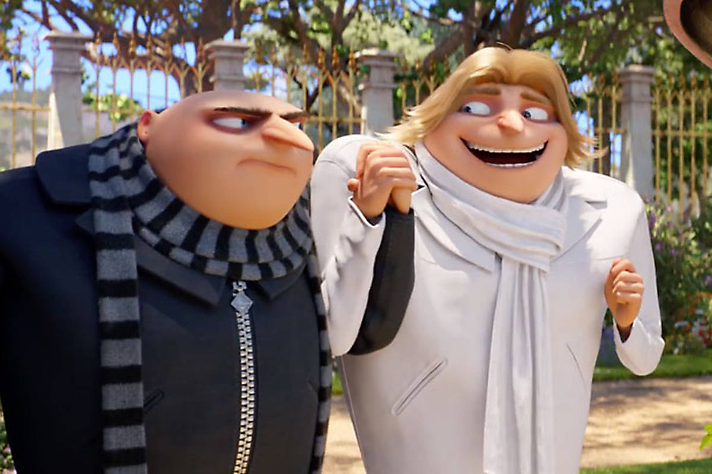
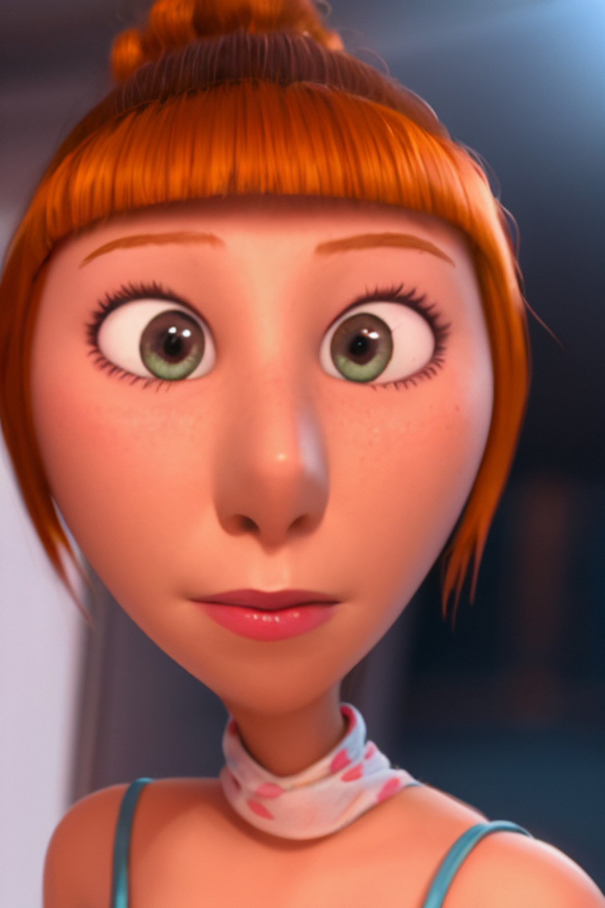
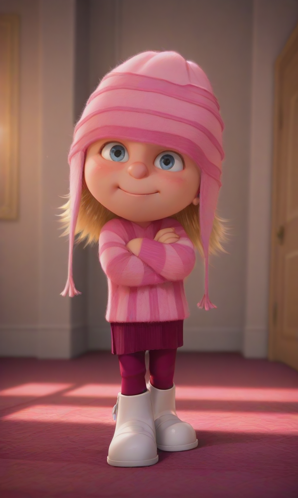
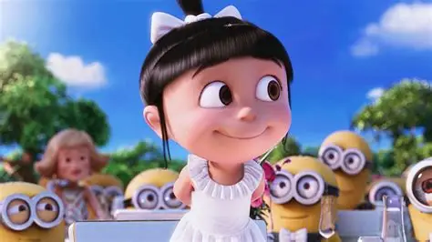
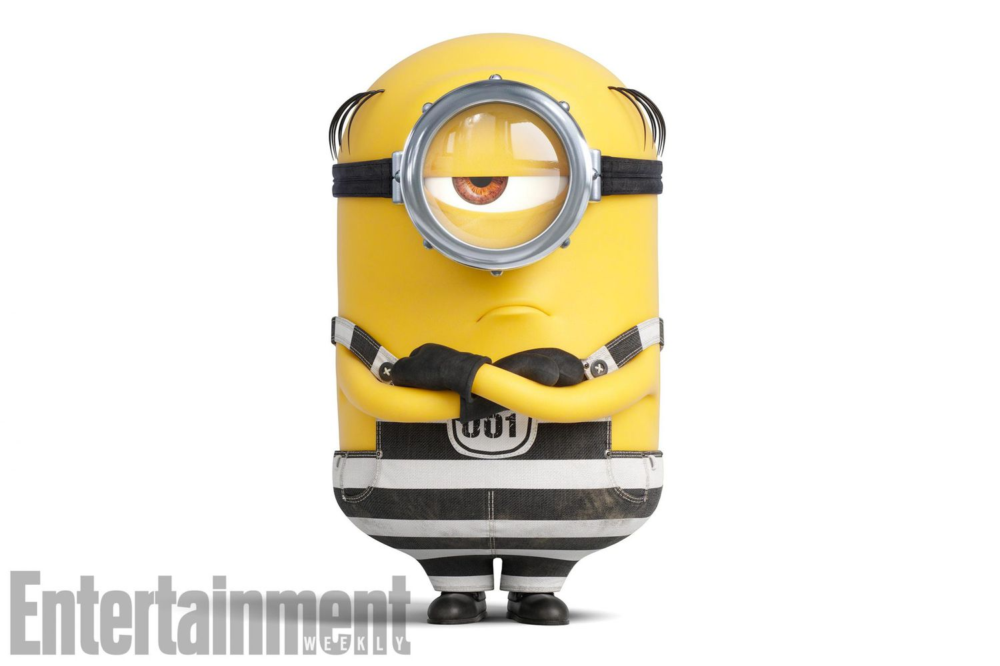
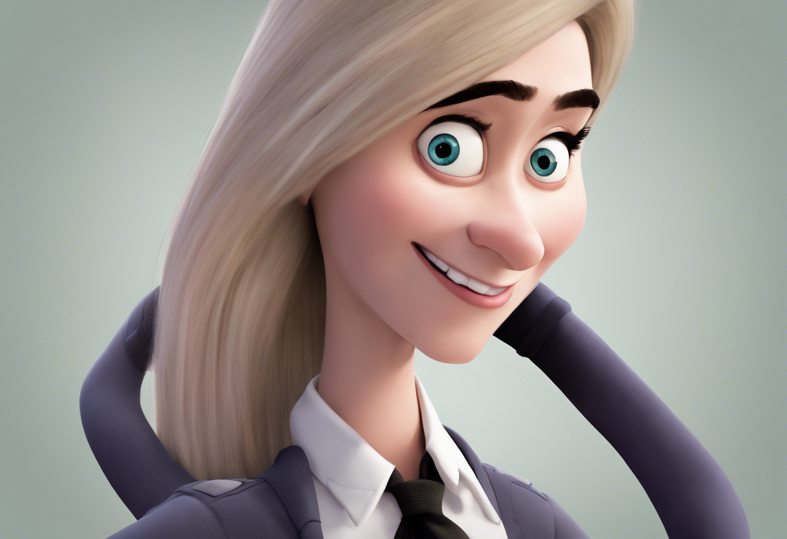
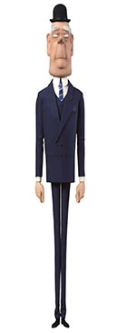

PROTAGONISTS

Gru
Voiced by Steve CarellSi Gru ay dating supervillain na naging ama ng tatlong batang babae at ngayon ay agent ng Anti-Villain League. Natanggal siya sa trabaho nang mabigo niyang mahuli si Balthazar Bratt. Sa pelikulang ito, nalaman niyang may kakambal pala siya. Matigas ang ulo niya at madalas mapahamak, pero malaki ang puso niya para sa pamilya. Natututo siyang tanggapin ang kanyang nakaraan at piliin kung sino talaga siya.

Lucy Wilde
Voiced by Kristen WiigSi Lucy ay magaling na agent ng Anti-Villain League at asawa ni Gru. Natanggal din siya sa trabaho kasama ng asawa niya. Pinipilit niyang maging mabuting ina sa tatlong batang babae kahit minsan nahihirapan siyang makuha ang loob nila. Matapang, masayahin at mahusay siya sa mga gadget at laban. Dahil sa kanya, mas lumalakas ang loob ni Gru.
Dru
Voiced by Steve CarellSi Dru ay kakambal ni Gru na lumaki sa Freedonia. Blond ang buhok niya, mayaman, at laging masaya at palakaibigan. Pangarap niyang maging villain tulad ng kanyang kapatid, pero hindi siya marunong mang-away. Gusto niyang makasama si Gru at ibahagi ang kanyang buhay sa pamilya nila. Madalas siyang magdulot ng gulo pero mabuti ang kanyang intensyon.

Margo
Voiced by Miranda CosgroveSi Margo ang panganay sa tatlong batang inampon ni Gru. Responsable at maalaga siya sa kanyang mga kapatid. Siya ang laging nagbabantay kina Edith at Agnes kapag may problema. Mabait at matalino siya, kaya madalas siyang takbuhan ng pamilya. Gusto niyang maging mabuting anak at kapatid sa lahat ng oras.

Edith
Voiced by Dana GaierSi Edith ang gitnang anak at kilala sa pagiging pilya at matapang. Mahilig siya sa mga kalokohan at laging may dalang kakaibang gamit. Madalas siyang magbiro at humamon sa kahit sino. Pero sa likod ng kanyang kaharutan, mahal na mahal niya ang kanyang pamilya. Handa siyang sumabak sa kahit anong adventure kasama sina Margo at Agnes.

Agnes
Voiced by Nev ScharrelSi Agnes ang bunso at pinaka-inosente sa magkakapatid. Mahilig siya sa mga unicorn at naniniwalang may totoo nito. Sa pelikulang ito, determinado siyang makahanap ng isa sa Freedonia. Madali siyang magmahal at laging nakangiti. Ang kanyang tapang at pananampalataya ang nagbibigay ng saya sa lahat.

The Minions
Voiced by Pierre CoffinAng Minions ay maliliit na dilaw na nilalang na mahilig sa saging at kalokohan. Matagal na silang tapat kay Gru bilang mga tagasunod niya. Nag-strike sila nang hindi na maging villain si Gru at humanap ng bagong amo. Sa huli, napunta sila sa kulungan at sa isang singing contest. Kahit magulo, hindi nila nakakalimutan ang kanilang pagkakaibigan kay Gru.

Mel
Voiced by Pierre CoffinSi Mel ay isa sa mga Minion at kilala bilang tagapagsalita nila. Siya ang nangunguna nang magpasya silang umalis kay Gru. Seryoso siya at mahilig mag-isip ng plano kahit minsan pumapalpak. Sa kulungan, siya ang nagpapanatili ng samahan ng grupo. Sa dulo, bumalik siya para tulungan si Gru sa laban.

Fritz
Voiced by Steve CooganSi Fritz ay ang tapat na butler ni Dru sa Freedonia. Pormal, magalang at laging handang maglingkod sa kanyang amo. Siya ang nag-aalaga sa mansyon at tumutulong kapag may bisita. Kahit seryoso ang itsura niya, may sarili rin siyang katatawanan. Isa siya sa mga unang sumalubong kay Gru at sa pamilya niya.
Marlena Gru
Voiced by Julie AndrewsSi Marlena ay ina nina Gru at Dru. Elegante, mapagmahal at laging may payo sa kanyang mga anak. Siya ang nagpapaalala kay Gru na mahalaga ang pamilya higit sa lahat. Sa kabila ng mga lihim ng nakaraan, nananatili siyang mabait at maunawain. Siya ang nagbibigay ng init at lakas ng loob sa kanilang pamilya.